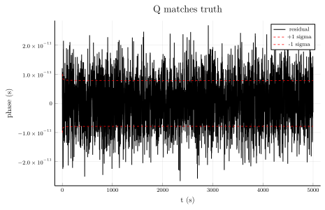
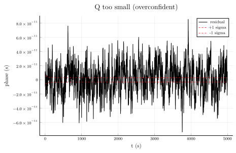
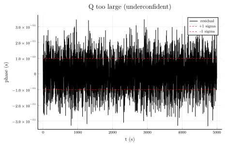
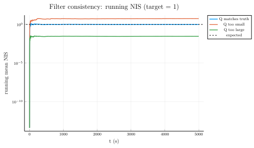

Process-noise tuning: well-fit vs poorly-chosen Q
The process-noise covariance Q controls how much the Kalman filter trusts its dynamics model versus incoming measurements. Set Q too small and the filter is overconfident — it claims a tight 1σ envelope that the actual residual blows through. Set Q too large and the filter trusts measurements over the model, tracking measurement noise instead of the underlying clock state.
This example:
- Simulates a
ThreeStateClockphase tape via stepwise cumsum integration of three independent Wiener processes (WFM, RWFM, RRFM) driving phase, frequency, and drift. - Runs three Kalman filters on the same data — one with Q matching the truth, one with Q underestimated by 100×, one with Q overestimated by 100×.
- Plots the phase residual against the filter's own ±1σ envelope, and the normalized innovation squared (NIS) statistic that quantifies whether the filter is over- or under-confident.
Under a correct Q the residual sits inside ±1σ about 68 % of the time and the running-mean NIS hovers around 1. Mismatched Q shows up immediately on both plots.
using ClockEnsemble
using LinearAlgebra
using Random
using Plots1. Simulate the truth by cumsum integration
The three-state polynomial clock SDE
\[dX_1 = X_2\,dt + \sigma_1\,dW_1,\quad dX_2 = X_3\,dt + \sigma_2\,dW_2,\quad dX_3 = \sigma_3\,dW_3\]
discretises to the iterative scheme below. Each Wiener increment dW_i has variance dt, so a single-step increment of process i is sqrt(σ_i * τ) * randn().
Random.seed!(0xC10C)
τ = 1.0
N = 5000
σ1_true = 1.0e-22 # WFM diffusion
σ2_true = 1.0e-32 # RWFM diffusion
σ3_true = 1.0e-44 # RRFM diffusion
R_true = 1.0e-22 # WPM measurement-noise variance
phase = zeros(N)
freq = zeros(N)
drift = zeros(N)
for k in 2:N
drift[k] = drift[k-1] + sqrt(σ3_true * τ) * randn()
freq[k] = freq[k-1] + drift[k-1] * τ + sqrt(σ2_true * τ) * randn()
phase[k] = phase[k-1] + freq[k-1] * τ + 0.5 * drift[k-1] * τ^2 + sqrt(σ1_true * τ) * randn()
endNoisy measurement tape: phase plus white-phase-modulation jitter.
z = phase .+ sqrt(R_true) .* randn(N)5000-element Vector{Float64}:
-1.208371506626023e-11
-1.5268143766827596e-11
-2.2039882637665536e-11
-2.5949185235612387e-11
-4.850233898522642e-11
-5.461163695832285e-11
-3.7671640996270994e-11
-1.1598726983850778e-11
-2.8284175047998258e-11
-2.9659183446249715e-11
⋮
-1.4450440603564269e-10
-1.1231169668860878e-10
-1.1492140769749928e-10
-1.4551164950085937e-10
-1.2041308380450028e-10
-1.1385969603256115e-10
-1.1533329538473901e-10
-1.0257012257397897e-10
-1.1003212856772226e-102. Run three Kalman filters
Same data, three different process-noise models. The well-tuned filter uses the same σ-values that generated the data. The mismatched filters are off by a factor of 100 in each direction.
At every step we snapshot the predicted (a priori) innovation ν = z − H x̂_{k|k-1} and innovation covariance S = H P_{k|k-1} Hᵀ + R to compute the NIS statistic NIS = ν² / S, which is the standard consistency test for the filter.
function run_kf(model)
est = KalmanFilter([z[1], 0.0, 0.0], 1.0e-10 * Matrix(I(3)))
H = measurement_matrix(model)
Rmat = measurement_noise(model)
residual = zeros(N)
sigma = zeros(N)
nis = zeros(N)
for k in 1:N
predict!(est, model, τ)
ν = z[k] - (H * est.x)[1]
S = (H * Matrix(est.P) * H' + Rmat)[1, 1]
nis[k] = ν^2 / S
update!(est, model, z[k])
residual[k] = phase[k] - est.x[1]
sigma[k] = sqrt(est.P[1, 1])
end
return residual, sigma, nis
end
model_well = ThreeStateClock(tau=τ, R=R_true,
σ1=σ1_true, σ2=σ2_true, σ3=σ3_true)
model_low = ThreeStateClock(tau=τ, R=R_true,
σ1=σ1_true / 100, σ2=σ2_true / 100, σ3=σ3_true / 100)
model_high = ThreeStateClock(tau=τ, R=R_true,
σ1=σ1_true * 100, σ2=σ2_true * 100, σ3=σ3_true * 100)
res_well, sig_well, nis_well = run_kf(model_well)
res_low, sig_low, nis_low = run_kf(model_low)
res_high, sig_high, nis_high = run_kf(model_high)([1.208371506626023e-11, 2.1674966678392888e-12, 1.3057726578278047e-12, -9.685290434490662e-12, 1.03151314120602e-11, 6.15802952324007e-12, -1.0629541446643248e-12, -1.3189190142757343e-11, 6.333016219303153e-12, 5.560422744797685e-12 … -3.769046134435521e-12, 1.8625551995582554e-11, 2.4250224553707536e-13, -6.53062186086318e-12, 2.69575647431115e-11, 9.526862554795856e-13, -3.349553307694787e-12, 1.127954457767848e-11, 3.1141273177962907e-12, -2.467367167293199e-12], [9.999999999995e-12, 9.999999999996001e-12, 9.99999999999375e-12, 9.991932220851294e-12, 9.985378727539916e-12, 9.980448764685956e-12, 9.976689575110967e-12, 9.973752092558077e-12, 9.97140207664262e-12, 9.969483007290186e-12 … 9.95089440130348e-12, 9.95089439339619e-12, 9.950894385492067e-12, 9.950894377591111e-12, 9.950894369693318e-12, 9.950894361798687e-12, 9.950894353907215e-12, 9.9508943460189e-12, 9.950894338133743e-12, 9.950894330251738e-12], [0.0, 8.112468918535756e-14, 6.690576587481385e-14, 0.00067095602194827, 0.008633853834255018, 0.010899765517620917, 0.047878862961621346, 0.0257977979970243, 0.07238877225960656, 0.0035767882794587504 … 0.0061556407693406905, 0.15449218470286186, 0.10091546020135833, 0.000403604025137561, 0.09019987712325381, 0.061686542829827586, 0.004898258004847999, 0.00012691275613089625, 0.016605859276366288, 0.004907448703719527])3. Residual vs ±1σ envelope
A well-tuned filter's predicted 1σ envelope (red dashed) bounds the actual residual (black) roughly 68 % of the time. With Q too small the envelope collapses below the residual — the filter is convinced it knows the state better than it does. With Q too large the envelope is loose and the residual is noisier because the filter is chasing measurement jitter.
Three separate figures, one per Q-tuning case.
t = (0:N-1) .* τ
function envelope_plot(res, sig, title_str)
plot(t, res; label="residual", color=:black, lw=1.0,
xlabel="t (s)", ylabel="phase (s)", title=title_str,
legend=:topright)
plot!(t, sig; label="+1 sigma", color=:red, ls=:dash, lw=0.8)
plot!(t, -sig; label="-1 sigma", color=:red, ls=:dash, lw=0.8)
end
envelope_plot(res_well, sig_well, "Q matches truth")
envelope_plot(res_low, sig_low, "Q too small (overconfident)")
envelope_plot(res_high, sig_high, "Q too large (underconfident)")
4. Normalized innovation squared (NIS)
NIS_k = ν_k² / S_k is the standard filter-consistency diagnostic. For a correctly-tuned scalar-measurement KF, the expected value is 1.0 (because ν / √S is N(0,1) under the model). The running mean of NIS converges to:
- ≈ 1 when Q is well-tuned,
- ≫ 1 when Q is too small (residuals exceed the filter's predicted S),
- ≪ 1 when Q is too large (residuals fall short of the filter's S).
The log-scale plot makes the asymmetry obvious.
running_mean(x) = cumsum(x) ./ (1:length(x))running_mean (generic function with 1 method)Step 1's innovation is exactly zero (predict!'s k==0 gate makes the first call a no-op, so ν = z[1] − H x̂[1] = 0). Plot from step 2 to keep log10 happy.
idx = 2:N
plot(t[idx], running_mean(nis_well)[idx]; label="Q matches truth", lw=1.5,
yscale=:log10,
xlabel="t (s)", ylabel="running mean NIS",
title="Filter consistency: running NIS (target = 1)")
plot!(t[idx], running_mean(nis_low)[idx]; label="Q too small", lw=1.5)
plot!(t[idx], running_mean(nis_high)[idx]; label="Q too large", lw=1.5)
hline!([1.0]; label="expected", color=:black, ls=:dash)
5. Numeric readout
Steady-state residual RMS (last 1000 samples) and final running-mean NIS for each filter.
burn = N - 999
rms(x) = sqrt(sum(x .^ 2) / length(x))
println("Residual RMS over last 1000 samples (seconds):")
println(" well-tuned : ", round(rms(res_well[burn:end]); sigdigits=3))
println(" Q too small: ", round(rms(res_low[burn:end]); sigdigits=3))
println(" Q too large: ", round(rms(res_high[burn:end]); sigdigits=3))
println()
println("Running-mean NIS, final value (target = 1.0):")
println(" well-tuned : ", round(running_mean(nis_well)[end]; sigdigits=3))
println(" Q too small: ", round(running_mean(nis_low)[end]; sigdigits=3))
println(" Q too large: ", round(running_mean(nis_high)[end]; sigdigits=3))Residual RMS over last 1000 samples (seconds):
well-tuned : 7.87e-12
Q too small: 2.08e-11
Q too large: 9.81e-12
Running-mean NIS, final value (target = 1.0):
well-tuned : 0.996
Q too small: 5.7
Q too large: 0.029